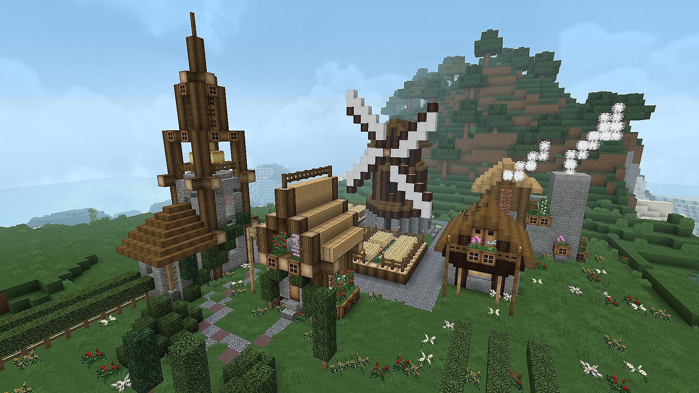
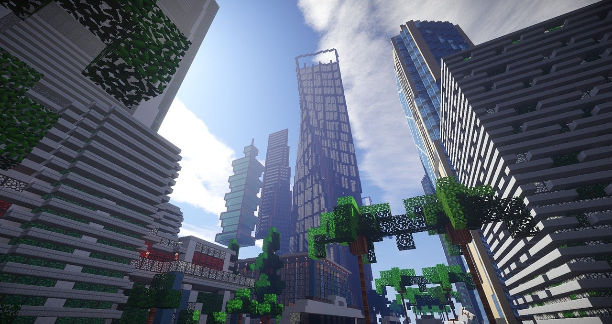

クリエイティブとは
- クリエイティブモードとは何か
クリエイティブモードは、マインクラフトのゲームモードの一つです。このモードでは、プレイヤーは無限の資源と特別な能力を手にし、自由に建築や創造を行うことができます。資源の収集や敵との戦闘といったサバイバル要素から解放され、純粋に創造性を追求することに特化しています。
- サバイバルとの違い
サバイバルモードでは、プレイヤーは資源を集め、道具を作り、敵から身を守りながら生き残ることを目指します。空腹度や体力といった要素もあり、限られた資源の中で工夫を凝らす戦略性が求められます。
一方、クリエイティブモードでは、インベントリにすべてのアイテムが最初から揃っており、空を飛ぶことや一撃でブロックを破壊することも可能です。ダメージを受けることもなく、モンスターが出現しても襲われることはありません。これにより、プレイヤーは時間や制約を気にすることなく、想像力を最大限に発揮して作品づくりに集中できます。 - 初心者におすすめの理由
マインクラフトを始めたばかりの初心者にとって、クリエイティブモードは非常におすすめです。サバイバルモードのように資源集めや敵との戦闘に時間を費やすことなく、すぐに建築やゲームの基本的な操作を学ぶことができます。様々なブロックやアイテムを自由に試しながら、マインクラフトの世界での創造の楽しさを体験するのに最適なモードです。
遊び方: サバイバルモードとクリエイティブモード(マインクラフト 日本公式 / Minecraft Japan)
クリエイティブでできること
- すべてのアイテムが自由に使える
クリエイティブモードでは、マインクラフトに存在するすべてのアイテムを自由に使うことができます。ブロック、ツール、食料、レッドストーン回路の部品、ポーションなど、ありとあらゆるものがインベントリからすぐに取り出せます。
- モブを自由に出せる
村人や動物はもちろんのこと、ゾンビやクリーパーといった敵対モブも自由にスポーンさせることができます。これにより、建築物の雰囲気に合わせたモブを配置したり、様々なモブの動きや特性を観察したりするのに役立ちます。
- 空を自由に飛べる
通常の移動では行けないような高い場所や、広範囲を一気に移動したいときに便利なのが「飛行」です。二回ジャンプキーを押すだけで簡単に空を飛び、建築物を上から眺めたり、広大な世界を素早く移動して次の創造の場所を探したりできます。
- ものを自由に壊せる
クリエイティブモードでは、ブロックを一瞬で破壊することができます。巨大な建築物を素早く解体したり、試行錯誤しながら最適な配置を探す際に非常に便利です。
- コマンドで自由に遊ぶ
コマンドブロックやチャットコマンドを使うことで、さらに高度な操作が可能です。時間帯の変更、天候の操作、特定の効果の付与、テレポートなど、ゲームの様々な要素をプログラムのように制御できます。これにより、ミニゲームを作成したり、より複雑な装置を開発したりと、遊びの幅が大きく広がります。

おすすめの遊び方
- 建築
クリエイティブモードの醍醐味といえば、なんといっても「建築」です。無限のブロックと自由に空を飛べる能力を使って、思いのままに建物や構造物を作り上げることができます。
- 巨大建築物
スケールの大きなものに挑戦したいなら、巨大建築物がおすすめです。ピラミッドのようなシンプルな形から、複雑な構造を持つ架空の都市まで、時間と労力をかけて作り上げる達成感は格別です。
- ピクセルアート
ブロックをドット絵のピクセルのように並べて、巨大な絵を描く「ピクセルアート」も人気です。好きなキャラクターや風景などをマインクラフトの世界に再現し、まるでゲームの中にアート作品を展示するかのような体験ができます。
- レッドストーン回路
レッドストーンは、マインクラフトにおける電気のようなもので、複雑な機械や装置を作成できます。自動ドア、エレベーター、トラップ、計算機など、レッドストーン回路を組むことで、あなたの建築物に機能性やギミックを追加することができます。
- 空を飛んで探索
広大なマインクラフトの世界を、空を飛びながら探索するのも楽しい遊び方です。普段見慣れた地形も、上空から見ると新しい発見があったり、次なる建築のインスピレーションを得られたりします。
- MODで遊ぶ
マインクラフトのMOD（Modification）を導入することで、さらに遊びの幅が広がります。新しいブロックやアイテム、モブ、機能などが追加され、クリエイティブモードでの創造性がさらに加速します。ただし、MODの導入は自己責任で行い、事前に情報収集をしっかり行うようにしましょう。

よくある質問
- モードを切り替える
マインクラフトでは、ゲーム内のコマンドや設定画面から、いつでもサバイバルモードとクリエイティブモードを切り替えることができます。
例えば、チャット画面で/gamemode creativeと入力すればクリエイティブモードに、/gamemode survivalと入力すればサバイバルモードに変わります。これにより、あなたの遊びたいスタイルに合わせて、自由にモードを選択してプレイできます。 - クリエイティブ化する際の注意
一度サバイバルモードで作成した世界をクリエイティブモードに変更することは可能ですが、いくつか注意点があります。
最も重要な点として、クリエイティブモードに切り替えると、その世界では以降アチーブメント（進捗）が達成できなくなります。 アチーブメントは、ゲーム内で特定の目標を達成した際に与えられる報酬や記録のようなものです。例えば、初めてダイヤモンドを採掘する、エンドラを倒す、特定のアイテムをクラフトするなど、様々なアチーブメントが存在します。もし、今後その世界でアチーブメントの達成を目指したい場合は、クリエイティブモードへの切り替えは慎重に行う必要があります。
また、クリエイティブモードで大量のアイテムをスポーンさせたり、広大な建築物を一気に作成したりすると、セーブデータが大きくなる可能性があります。これにより、ゲームの動作が重くなったり、読み込みに時間がかかったりする場合があることも覚えておきましょう。